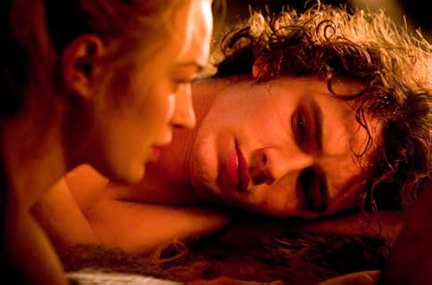

Long before history was written in ink and stone, when kingdoms rose and fell on the strength of swords and oaths, there lived a knight named Tristan—brave, noble, and bound by honor—and a princess named Isolde, radiant and sharp, born into a world where love was a luxury few could afford.
Tristan was the nephew of King Mark of Cornwall, a ruler admired for his wisdom. Orphaned at a young age, Tristan was raised in his uncle’s court, growing into a man of unmatched courage and unmatched sorrow. He was a warrior of great renown, but behind his chivalry burned a longing that not even glory could extinguish.
One day, Cornwall faced war. The Irish king demanded tribute, and to preserve peace, King Mark sent Tristan to face the champion of Ireland—Morholt, a fearsome knight and the king's own brother-in-law. In a brutal duel, Tristan defeated Morholt, but was gravely wounded by a poisoned blade. Fearing death, he set himself adrift in a boat, letting the sea carry him where it might.
The waves brought him, unconscious and fevered, to the shores of Ireland—his enemy’s land.
There, he was discovered by a young woman with golden hair and emerald eyes. Isolde, daughter of the very king whose champion he had slain, did not know his true name. She healed him with herbs and song, and for days Tristan lay between life and death, his dreams haunted by her voice.

They spoke little. Words were not needed. In the quiet of the castle’s garden, love bloomed unnoticed. But when Tristan recovered and his identity was revealed, he had no choice but to flee. The truth turned beauty into betrayal. Isolde watched the sea steal him away, her heart aching with questions and promises unspoken.
Back in Cornwall, King Mark—growing old and pressured by his court—sought to secure his throne with marriage. Word spread of Isolde, whose beauty and grace had become legend. Believing it a wise political match, he sent Tristan, his most trusted knight, to bring her back—not as a lover, but as a bride for his king.
The weight of this task crushed Tristan’s chest. Still, he obeyed.
In Ireland, Isolde greeted him with a quiet fury. She had not forgotten his face, nor forgiven the silence he left her with. But she could not deny her feelings. Despite the pain, her heart quickened at his presence. Her voice softened. And though he came with chains disguised as marriage, she agreed to go with him.
The ship that carried them back to Cornwall held more than politics and pride—it held a secret too great to contain.
Isolde’s maid, fearing the tension between the two and the cold nature of the match awaiting her mistress, prepared a love potion, meant to be shared between Isolde and King Mark on their wedding night. A drink to bond their souls and sweeten their fate. But fate had its own design.
On the journey, Tristan and Isolde drank the potion—unknowingly, drawn together by thirst and the ache of distance. What followed was not magic. It was truth. All the longing, all the fear, all the words they never dared speak spilled into one breathless kiss. That night, the stars themselves seemed to shiver.
Their souls were no longer theirs. They were one.
But love does not silence duty.
Isolde married King Mark, and Tristan returned to his knightly duties, hiding agony behind armor. They met in secret—moments stolen between wars and feasts, in gardens and moonlight. Every touch was joy. Every parting, torment. They lived in a prison of longing, bound by loyalty to a king who trusted them both.
But secrets, like love, cannot be buried forever.
One night, they were discovered. The betrayal struck King Mark like a sword. His heart broke not just for the wife who deceived him, but for the nephew he loved as a son. And though he had every right to execute them, he could not. Love had cursed all three.
Tristan was banished from Cornwall. Isolde remained, a queen with a crown too heavy for her grieving heart.
Tristan wandered far and wide, fighting wars that meant nothing, seeking distraction in other kingdoms, other causes. In time, he settled in Brittany, where he married a woman with the same name—Isolde of the White Hands. But his heart never left the woman he drank the potion with, the woman whose name echoed in every heartbeat.
One day, while fighting to defend a lord’s lands, Tristan was wounded again by a poisoned blade—a cruel mirror of his past. As the fever consumed him, he called out for the only cure he believed in: Isolde of Ireland.
A ship was sent. A message carried: If she agrees to come, let the sail be white. If not, let it be black.
Days passed. The sea remained silent.
From his bed, Tristan asked again and again: “Do you see the sail?”
At last, the ship appeared.
But his wife, consumed by jealousy, whispered a lie. “The sail is black.”
Tristan’s breath stopped.
And when the ship docked, Isolde ran through the halls to find him—but found only stillness. Her sobs filled the room. She lay beside him, her fingers on his face, and her heart shattered one last time. And like a flower without sun, she faded beside him, her last breath a prayer to love.
They buried them side by side, in a chapel by the sea.
From Tristan’s grave, a briar grew. From Isolde’s, a rose. Their vines climbed the chapel walls, tangled together in defiance of stone and sorrow. No sword could cut them apart. Every time they were severed, they grew back—reaching, wrapping, forever intertwined.
Because some loves, even in death, refuse to let go.